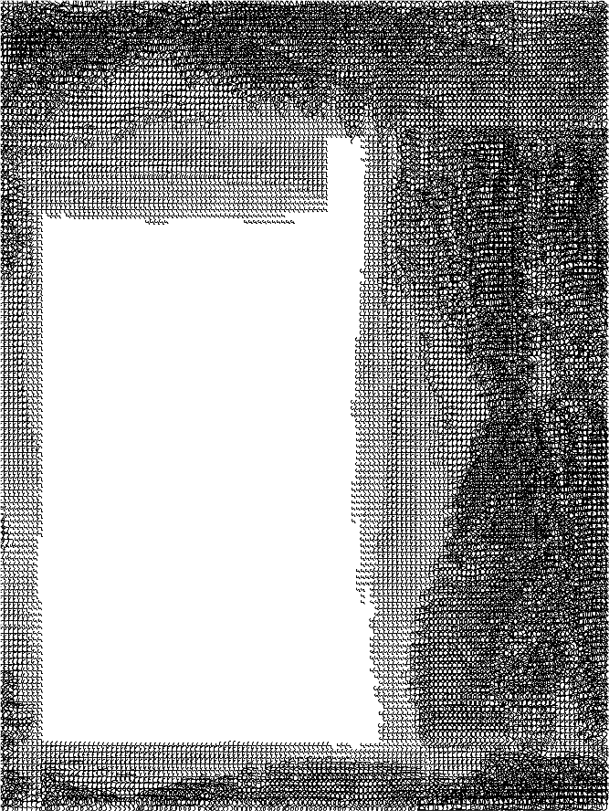
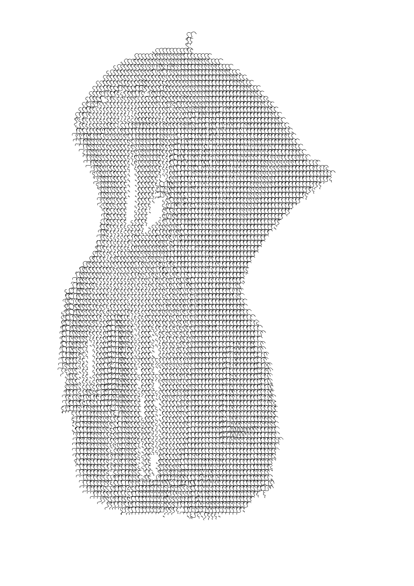
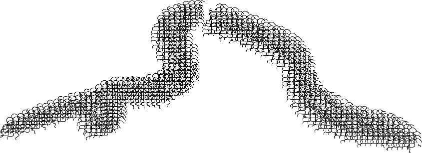
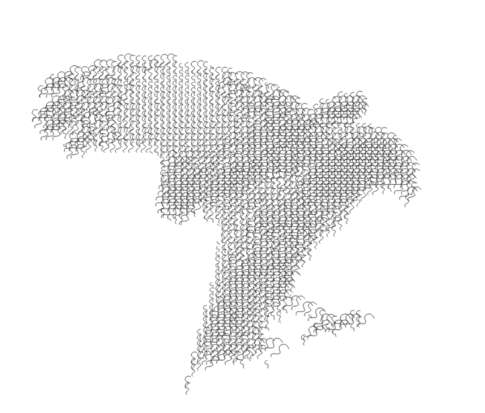
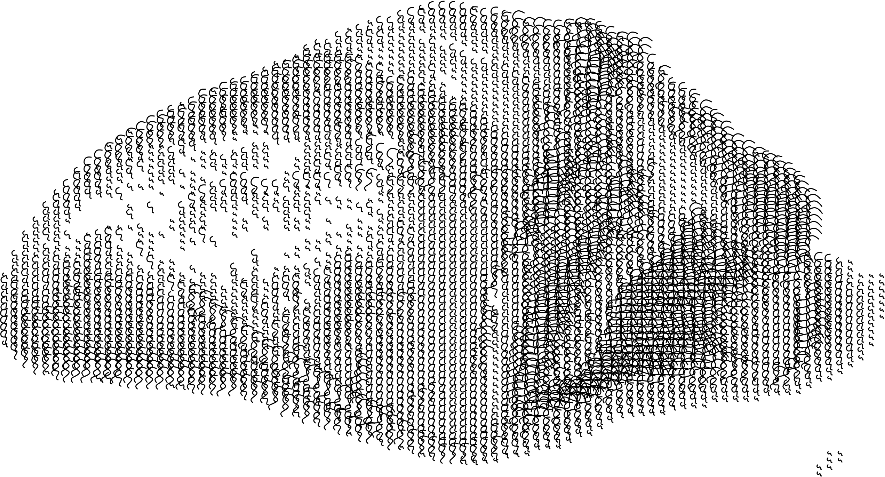

Édito

Édito

Ouverture

Ouverture


Chant I - Tisser sa toile

Criss Cross


Chant II - Qu'est ce qu'un monde?

Nos petites madeleines

Lungs - Skinstrap

Dualskin - Casserole identitaire - OSP
Le nu civil - Vieil

Objets trouvés dans la recherche
Chant III - Être aux aguets

Bleu

- Col bleu
- Un bleu
- Être épris de quelqu'un
- Être fleur bleue
- Richesse représentée par la mer et le tourisme qui y est lié
- Steak grillé extérieurement mais cru à l'intérieur
- Conte bleu
- Être dans l'incertitude, être dans un rêve
- Colère bleue
- Être mal en point, avoir mal au cœur
- Être dans le bleu
- Soldat de l'ONU
- Être bleu de quelqu’un
- Ouvrier
- La planète bleue
- Un bleu
- La grande bleue
- Personne très habile en cuisine
- Combinaison de travail en toile bleue
- Bleu-Bleu
- Être candide, être naïf
- Une peur bleue
- Avoir le sang bleu
- Steak bleu
- Un spectacle de Stéphane Arcas
- Discours mensonger
- Être chocolat bleu pâle (expression belge)
- Moment qui précède l'aube
- Jeune recrue à l'armée
- L'heure bleue
- Un hématome
- Casque bleu
- Être d'origine noble
- Colère violente
- La planète Terre
- Un bleu
- Peur violente
- La mer Méditerranée
- L'or bleu
- Cordon bleu
Chant IV -Les images font du bien à l'âme


KÄTHCHEN DE HEILBRONN





Chant V - Se déterritorialiser

cOMMENT dIRE


Enfoncures


Être ou le jardin d'Eden
Chant VI - Le comique
L'écolier Kevin

Chant VII - Devenir


Hantologie

Hantologie

Chant VIII - Process
Public - Rencontres
Informtaions pratiques
Informations pratiques
Making off
Équipe - Colophon
Partenaires